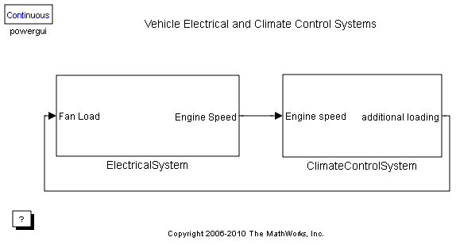
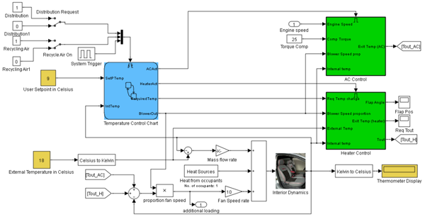
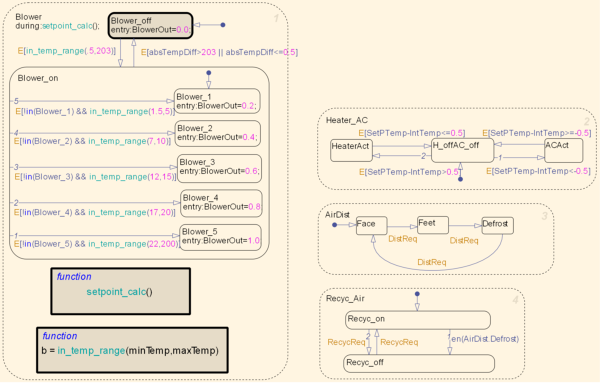
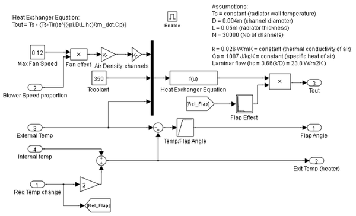
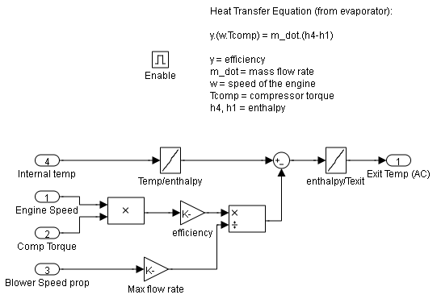
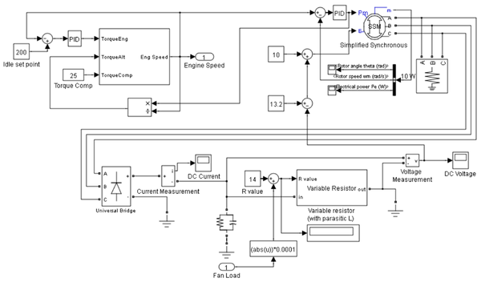

自動車の電気と室温調節システム
このモデルでは、自動車の室温調節システムを電気システムのモデルとインターフェイスして、自動車の電気システム全体に対する室温調節システムの負荷の影響を調べます。
目次
図 1: 自動車の電気と室温調節システム
室温調節システム
ClimateControlSystem サブシステムをダブルクリックすると、室温調節システムのモデルが開きます。ここで、ユーザーが車内の空気に到達させたい温度値を入力するには、USER SETPOINT IN CELSIUS ブロックをダブルクリックし、ダイアログ ボックスに値を入力します。同様の方法でユーザーは EXTERNAL TEMPERATURE IN CELSIUS も設定できます。モデルの右側の数値表示は、運転席頭部の後ろに設置された温度センサーの測定値を示しています。これは、ドライバーが感じる温度です。モデルが実行され、室温調節がアクティブになると、この表示ボックスの値が変化して、車内温度の変化を示します。
図 2: 自動室温調節システム
Stateflow® コントローラー
このシステムのコントロールは、Stateflow® で実装されます。Stateflow チャートをダブルクリックすると、この監視制御ロジックがどのように定式化されているかが示されます。
Heater_AC ステートは、ユーザーが、車内の現在温度より少なくとも 0.5℃高い設定点温度を入力すると、ヒーター システムがオンになることを示しています。ヒーターは、車内の現在温度が設定点温度の 0.5℃以内に到達するまでアクティブなままになります。同様に、ユーザーが、現在の車内温度より 0.5℃ (以上) 低い設定点を入力すると、エアコンがオンになり、車内の気温が設定点温度の 0.5℃以内に到達するまでアクティブなままになります。その後、システムはオフになります。連続切り替えの問題を回避するために、0.5℃の不感帯が実装されています。
Blower ステートでは、設定点温度と現在温度の差が大きくなるほど、ファンはより強く送風します。これにより、温度差に関係なく、妥当な時間内に温度が必要値に到達します。この場合も同様に、車内の気温が設定点温度の 0.5℃以内に到達すると、システムはオフになります。
空気分散 (AirDist) ステートと空気再循環 (Recyc_Air) ステートは、Stateflow チャートをトリガーする 2 つのスイッチによって制御されます。必要に応じて、窓の効果的な除霜を促進するために、これら 2 つのステート内で内部遷移が実装されています。除霜ステートがアクティブになると、空気の再循環はオフになります。
図 3: Stateflow の監視制御ロジック
ヒーター モデルとエアコン モデル
ヒーター モデルは、次に示す熱交換器の方程式から作成されました。
Tout = Ts - (Ts-Tin)e^[(-pi*D*L*hc)/(m_dot*Cp)]
ここで、
- Ts = 定数 (ラジエーター壁面温度)
- D = 0.004m (チャンネル直径)
- L = 0.05m (ラジエーターの厚さ)
- N = 30000 (チャンネル数)
- k = 0.026 W/mK = 定数 (空気の熱伝導率)
- Cp = 1007 J/kgK = 定数 (空気の比熱)
- 層流 (hc = 3.66(k/D) = 23.8 W/m2K )
さらに、ヒーター フラップの効果が考慮されています。送風機の動作と同様に、必要な設定点温度と車内の現在温度の温度差が大きくなるほど、ヒーター フラップはより大きく開き、暖房効果はより大きくなります。
エアコン システムは、室温調節モデルが自動車の電気システム モデルとインターフェイスする 2 つの場所のいずれかです。エアコン システムがアクティブになると、コンプレッサーは自動車のエンジンに負荷をかけます。エアコンから出る最終温度は、次のように計算されます。
y*(w*Tcomp) = m_dot*(h4-h1)
ここで、
- y = 効率
- m_dot = 質量流量
- w = エンジンの速度
- Tcomp = コンプレッサー トルク
- h4, h1 = エンタルピー
ここで、エアコンから出る空気の温度が、エンジン速度とコンプレッサー トルクによって決定されるエアコン システムのバンバン制御を行います。
図 4: ヒーター制御サブシステム
図 5: エアコン制御サブシステム
車室内の熱伝達
ドライバーが感じる気温は、次の要因すべての影響を受けます。
- 通気孔から出る空気の温度
- 外気温度
- 乗車人数
これらの要因が、車室内の熱力学モデルへの入力になります。通気孔から出る空気の温度を考慮するには、通気孔から出る空気の温度と車内の現在温度の差を計算し、これにファン速度比 (質量流量) を掛けます。次に、車内の 1 人につき 100W のエネルギーが追加されます。最後に、外気温度と室内空気温度の差に、小さい方の質量流量を掛けて、外部から車内に放散される空気を考慮します。
内部力学モデルの出力は、運転席頭部の後ろに設置されたセンサーによって読み取られる温度の測定値として表示ブロックに送られます。
電気システム
この電気システムは、アイドリング速度で自動車をモデル化します。PID コントローラーは、自動車のオルタネーター (出力電圧を制御するためにその界磁電流が調整される、単純化した同期機によってモデル化されます) も必要な速度で動作していることを確認します。電圧の出力は、その後、3 相 6 パルス ダイオード ブリッジに送られて、自動車の DC バスに電圧を供給するバッテリーを充電するために必要な電圧を供給します。
室温調節システムで使用されるファンは、ワイパー、ラジオなどと同様に、この DC バスを電源とします。設定点温度と車内の現在温度の差が減少すると、ファン速度も減少し、したがって、DC バスに対する負荷も減少します。電気システムにフィードバックを含めることにより、負荷に関係なく、バス上の電圧が一定の 12V のままになります。
自動車の電気システムの追加モデルでは、直流機としてモデル化されるエンジンに対する入力電圧を変更できます。入力電圧を変更すると、DC バス上の電圧に影響を与えることなく、エンジンの速度がどのように変化するかがわかります。
図 6: 電気システム